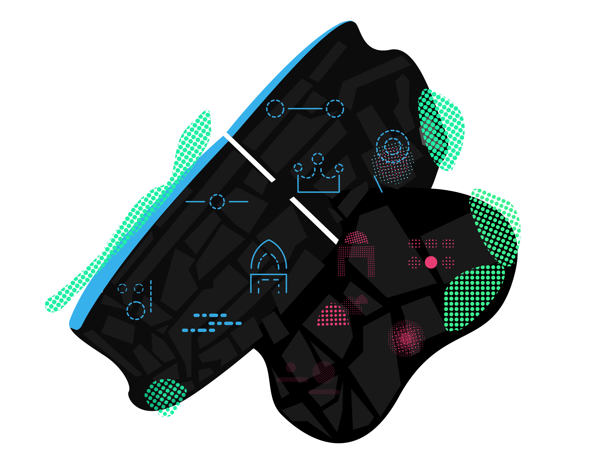
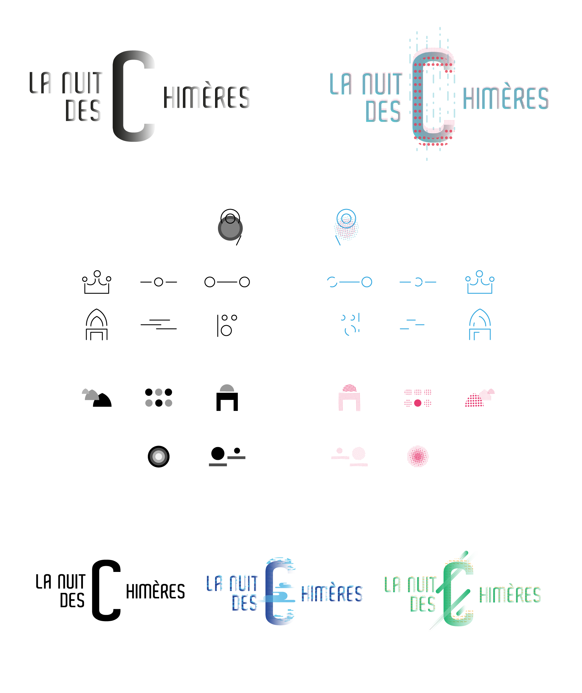

Project: design a visual identity and a safety for the event called « Night of chimera », sound and light show play out from July to August, in Le Mans.

Description:
This Sound and Light show will demonstrate annual screening about 11 ancients buildings. Two wayw will be possible : one for the center of the city (the modern one) and one for the ancient city. The visual identity of « la nuit des chimères » is flexible. Thanks to a logo and simplified pictograms, the annual theme will decorate graphics symbols (on the left, the original logo, on the right, the logo made in 2018 for theeden theme). Safety works in three areas : - the first one is for the logo screening
- The second one shows colorful glimmer
- The third one illustrate the closest building, showing the distance between it and you.
Purpose: this topic deals with three importants concepts : hybridization, patrimony and night. The thing here is to question the cohabitation between patrimony and screening. The chimera, this hybrid animal from the greek mythology, is a term used to describe the unrealistic. Screening, makes sens thanks to his deceptive nature, distorting, coloring the patrimony. The latter (ce dernier pour éviter la répétition) helps to create a territory history and the identity for those who occupy this territory. The night, dark, thick, opaque, profound, falling, with a brilliant moonlight, the stars... can produce a worrying condition. It's also a good moment for paetry, dreaming. The visual identity of 2018 under the eden topic explore grids, refering to the starry sky. Clouds give a vaporous aspect evoking dreams, illusions.
